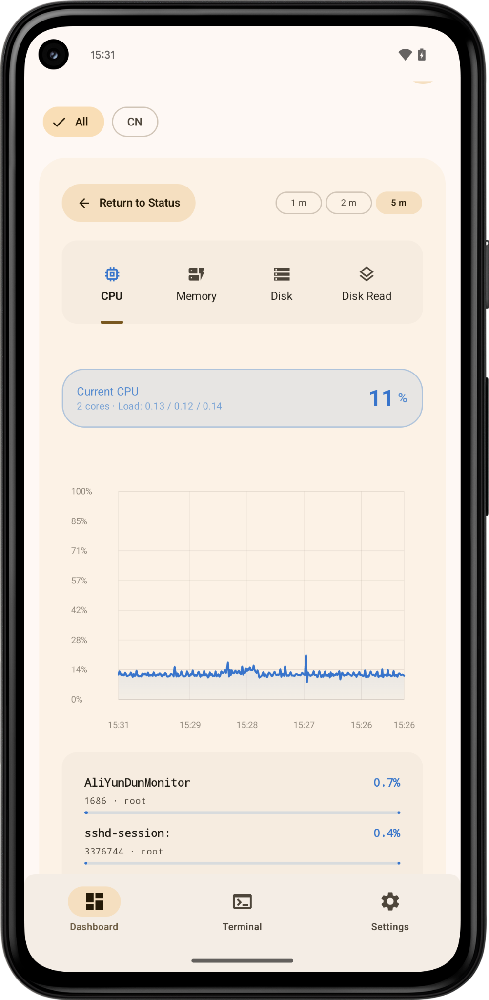

Monitoring
Live metrics and recent history
Each server has a status card for CPU, memory, disk, network and TCP readings. Switch to a chart to see recent history and current process, mount or network interface details.
Choose alert thresholds per server and whether to receive disconnect and recovery notifications. When several thresholds are exceeded, Meows sends a combined notification.
